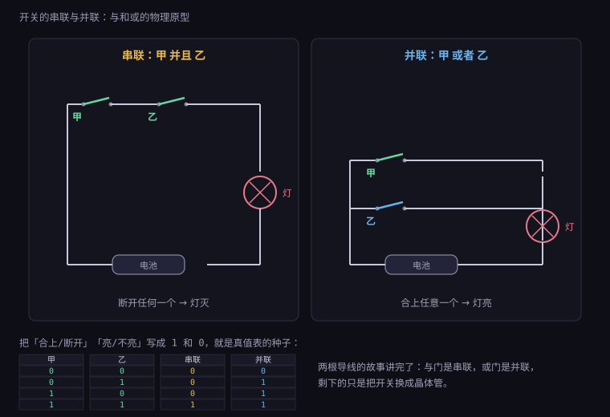
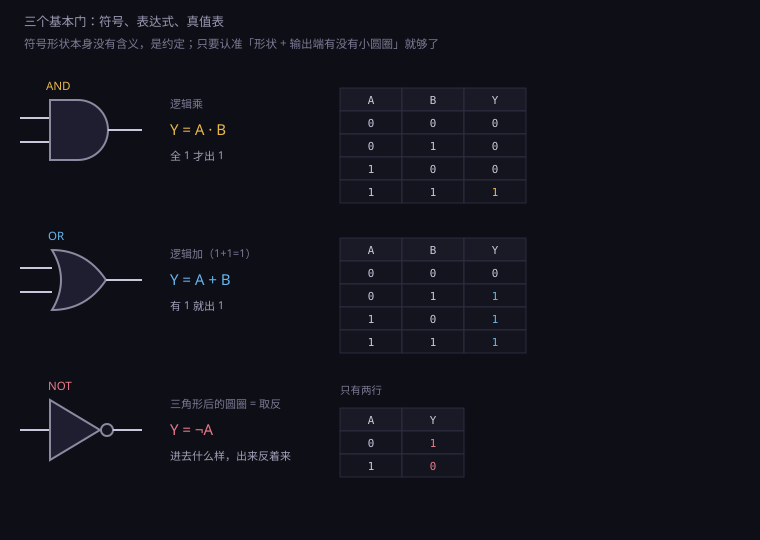
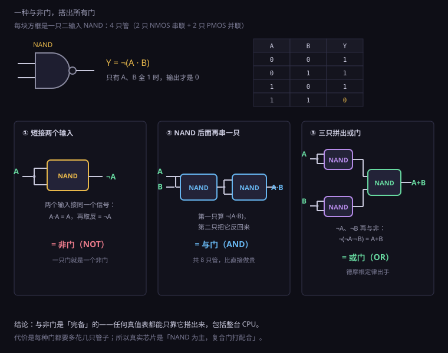
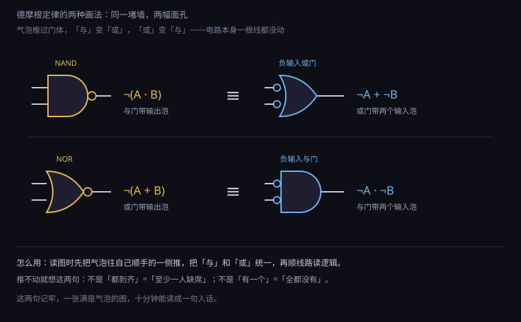
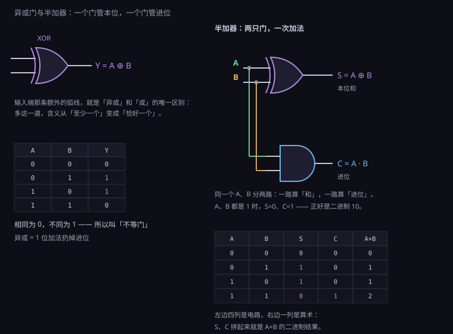
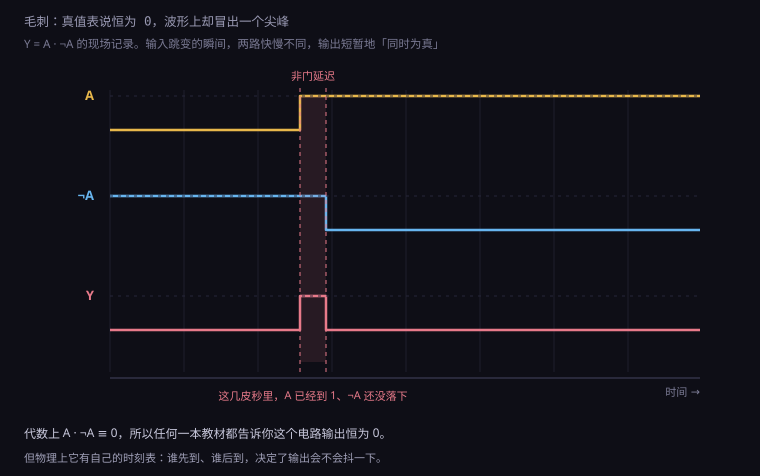

约 1.2 万字 · 6 张图 · 读完你能看懂任何一张门电路图、 说出为什么与非门是芯片厂的最爱、并且亲手拼出一个 2 选 1 选择器
先不谈管子，谈手电筒。这个电路小学生都见过：电池、开关、灯泡，用导线串成一圈。 开关合上，电流有路可走，灯亮；开关断开，灯灭。 现在把开关从一个变成两个，问题就来了：两个开关怎么接，各有各的脾气。
接法一：串联——两个开关首尾相连，串在同一条路上。 想让灯亮，必须两个都合上。断开任何一个，路就断了。 换句话说：「甲合上并且乙合上，灯才亮」。
接法二：并联——两个开关各占一条支路，并排跨在灯泡两端前面。 想让灯亮，只要有一个合上就行。两条路，走哪条都能到。 换句话说：「甲合上或者乙合上，灯就亮」。

把这两种接法分别穷举一遍——每个开关只有「合」「断」两种状态， 两个开关一共四种组合——就得到左边那张表。 注意看这张表：它没有电压、没有电流、没有灯泡， 只剩下「合上/断开」和「亮/不亮」这些抽象的是非判断。
把「合上」写成 1、「断开」写成 0，「亮」写成 1、「不亮」写成 0， 这张表就变成了纯粹的数学：两个输入位，决定一个输出位，规则不同，表就不同。 1854 年，英国数学家乔治·布尔发表了《思维规律的研究》，把「并且」「或者」「并非」 这三种日常语言里的连接词变成了代数运算——他当时研究的是「人类的推理能不能用数学算」。 他不会想到，一百多年后，这台「推理机器」被做成了硅片，装进几十亿人的口袋。
上一节的 CMOS 电路已经证明：晶体管能做「合上/断开」的开关。 那么把晶体管开关按串联或并联的方式组织起来， 就能得到会做「与」和「或」判断的电路。 开关是砖，门是墙。这一节讲的全部内容，物理上就这么多。
「开关电路 = 布尔代数」这个等号，本身有一段值得说的来历。 1937 年，24 岁的克劳德·香农在 MIT 写硕士论文， 题目是电话交换机——当时最复杂的开关网络，全靠人工经验设计。 香农发现：交换机里继电器的开合，和布尔代数的运算一一对应： 继电器串联是与，并联是或，常闭触点是非； 于是「设计一个交换网络」就变成了「化简一个布尔式」—— 后者有现成的代数方法，甚至有机械的化简流程。 论文题目叫《继电器与开关电路的符号分析》，被后世称为 「本世纪最重要的一篇硕士论文」。
这篇论文的意义远不止电话交换机。它证明了一件事： 判断的逻辑可以被电路「算」出来——推理的过程可以由开关网络自动完成。 四年后（1938–1941），德国的楚泽用继电器造出可编程计算机； 再往后，贝尔实验室造出第一代继电器计算机，真空管接班，晶体管接班， 但骨架始终是香农画下的那张图纸：逻辑用代数写，代数用开关算。 你现在读的这一节，就是那张图纸的第一页。
在正式认识每一种门之前，先认识描述它们的统一格式：真值表。
真值表的做法简单粗暴：穷举。 门的每个输入都只有 0 和 1 两种取值，那就把所有取值组合一排一排列出来， 每一排写上对应的输出。一个门有几个输入，表就有 2 的几次方行： 两个输入四行，三个输入八行，四个输入十六行。 一张真值表，就是这个逻辑电路的全部行为——没有任何隐藏行为。
这一点值得停下来想十秒。模拟电路的说明书是曲线： 输入 2.3 伏输出多少、输入 2.4 伏输出多少，无穷多个取值，永远测不完， 只能靠几段「线性区」「饱和区」近似。 而数字电路的输入只有两种，全部可能性是有限的、可数的、能一张纸写完的。 这就是数字电路可验证的根本原因：你不仅能描述它，还能彻底地描述它。 后面讲软件测试时说的「覆盖率」，数学上就是在跟这张表打交道。
软件世界把这套思想学了个十足。测试用例的设计方法里， 「把条件组合全部覆盖」的思路就是真值表驱动：把需求的每个条件抽象成布尔变量， 列出组合，逐条断言——软件工程师写「判定表测试」的时候， 手上干的就是本节的事，只是测试对象从门换成了函数。 更进一步，芯片行业有个职业叫验证工程师， 他们的核心武器「约束随机 + 覆盖率驱动」，数学本质还是那张指数增长的表： 64 个输入的真值表有 2⁶⁴ 行，谁也列不完， 于是用「约束」把表切小块，用「覆盖率」统计哪块还没测到。 指数爆炸是整张表的宿命，也是验证成为一门学科的原因。 这句话先放在这，第 1.6 部分讲工具链时还会回来收它。
顺便约定记号。本节的门都用 A、B 表示输入，Y 表示输出， 1 代表高电平（逻辑真），0 代表低电平（逻辑假）。 上一节讲过噪声容限：0.8 伏以下都算 0，2 伏以上都算 1， 中间那段灰色地带，门会自己把你推回两端—— 所以真值表才能这么理直气壮，它描述的是被「清洗」过的干净世界。
真值表还有一个不起眼但极重要的用途：它是「需求」和「实现」之间的合同。 设计电路的标准流程是——先把想要的行为写成真值表， 再从表反推出表达式，最后照表达式接线。 为什么表能反推出式子？因为有一个机械的办法，值得在这里就讲清楚， 后面第十节要靠它干活：
只盯着输出为 1 的那些行。 每一行写成一个「与项」：输入是 1 就写变量本身，是 0 就写它的非； 输出为 1 的行，是「恰好这组取值时输出 1」的完整条件， 所以每行与项要把所有输入都写全（三输入的项有三个因子）。 然后把这些与项或起来——任何一组输入， 要么命中某个「1 行」，要么不命中；不命中时所有与项都是 0，输出 0。 这个方法的名字叫积之和（sum of products，与项是「积」，或起来是「和」），缩写 SOP。
例：三输入真值表里只有两行输出 1
(A=0, B=1, C=1) → 与项 ¬A·B·C
(A=1, B=1, C=0) → 与项 A·B·¬C
输出 = ¬A·B·C + A·B·¬C ← 这就是照表抄出来的表达式照这样抄出来的式子不一定简洁，但一定对—— 这就是「完备」的第一层含义：有了与门、或门、非门，任何真值表都造得出来， 不需要灵感，只需要抄表。至于抄出来太啰嗦、要靠化简省门，那是后话。 第二层含义更漂亮：既然任何真值表都能写成 SOP， 而 SOP 只用到与、或、非三种门——这三种门就是完备的， 全世界所有数字电路，理论上都能从它们拼出来。第七节会把这套话再压缩到一种门上。
光说不练假把式，拿一个真实需求走一遍全流程。多数表决器： 三个人投票，少数服从多数——至少两人同意，议案通过。 输入 A、B、C 是三张票（1 为同意），输出 Y 是表决结果。 先列表，再抄式子：
| A | B | C | Y | 与项 |
|---|---|---|---|---|
| 0 | 1 | 1 | 1 | ¬A·B·C |
| 1 | 0 | 1 | 1 | A·¬B·C |
| 1 | 1 | 0 | 1 | A·B·¬C |
| 1 | 1 | 1 | 1 | A·B·C |
Y = ¬A·B·C + A·¬B·C + A·B·¬C + A·B·C四行输出为 1，四个与项，或起来——七只门（三只非、四只与、一只大或门）。 能化简吗？观察第三、四行：B、C 都为 1 时不管 A 是多少结果都是 1， 所以 ¬A·B·C + A·B·C 可以合并成 B·C（提出 B·C，括号里 ¬A + A = 1）。 同理 A·¬B·C 与 A·B·C 合并成 A·C，A·B·¬C 与 A·B·C 合并成 A·B。 化简完只剩三项：
Y = A·B + A·C + B·C 「任意两票同意即通过」五只门变三只与门加一只三输入或门，省近一半—— 而且式子读起来直白：AB 或 AC 或 BC，任意一对同意。 这个「化简前后逻辑全等、成本减半」的过程， 就是布尔代数在工程里真正赚钱的地方。 手工年代的卡诺图是把这种观察图形化的工具； 今天综合软件自动做，但记住这个例子，你就能看懂「综合结果省了 40% 门」是什么意思。
与门（AND gate）做的事，就是串联开关做的事：两个输入都是 1，输出才是 1； 只要有一个是 0，输出就是 0。
| A | B | Y | 一句话解读 |
|---|---|---|---|
| 0 | 0 | 0 | 都不成立，不放行 |
| 0 | 1 | 0 | 只成立一个，不放行 |
| 1 | 0 | 0 | 只成立一个，不放行 |
| 1 | 1 | 1 | 全部成立，放行 |
写成布尔代数就是 Y = A · B，中间那个点读作「与」，通常省略，直接写 AB。 为什么用乘号？对比一下乘法的性质就懂： 0 乘任何数得 0（有一个 0，结果就是 0）；只有 1 × 1 = 1。 「与」的行为和乘法在 0 和 1 这两个数上完全一致，所以布尔代数里「与」又叫「逻辑乘」。 同理你会猜到「或」对应加法——大致如此，只差一个细节，第四节说。
与门的日常原型是「条件同时成立」： 地铁安检门「闸机开」= 你刷卡 AND 门没被夹；网银转账「执行」= 密码对 AND 余额够； 照相快门「曝光」= 快门按下 AND 对焦完成。生活里全是与门，只是没人这么叫。
用晶体管怎么搭？上一节的素材直接能用：两个 NMOS 串联做下拉、两个 PMOS 并联做上拉—— 这就是 CMOS 的 NAND 门，不是 AND。为什么「与非」反而是基础？ 这是本节最重要的一件事，第六节细讲。先记住结论： CMOS 工艺里，NAND（与非）是天生的，AND（与）是拼出来的。
与门有三个以上的输入也很常见：三输入与门，八个输入组合里只有全 1 那一行输出 1。 比如一块单片机的「复位条件」：上电复位 AND 看门狗没咬 AND 调试器没插—— 三个条件全满足，芯片才正常跑。逻辑上和两个输入的与门没区别， 只是从四行表变成八行表。
与门还有一个大规模应用的角色：门卫。 想让一个信号「在允许的时候才通过」，就把它和允许信号 EN 一起送进与门： EN=1 时输出跟着数据走（A·1 = A，与门放行）；EN=0 时输出永远是 0（A·0 = 0，与门封锁）。 这叫门控——与门就是逻辑上的大门，EN 是钥匙。 数码管刷新、总线分时、中断屏蔽，底层全是这一招： 一百路信号同时存在，谁被允许「看见」，由各自的门卫决定。
门控还带来一个重要的工程习惯：时钟、片选、使能，这些控制信号几乎总是接在与门的位置， 而不是或门。因为与门能「扣下」信号（全 0 输出），或门只能「放过」； 出了问题，与门的风险是「误放行」，或门的风险是「误封锁」—— 诊断起来前者容易得多。这属于「怎么用门」的学问，比「门是什么」更值钱。
级联也顺带说一下。与门和与门直接相连（A·B）·C，根据结合律就是三输入与门， 结果一样——与、或都是「可结合」的运算，怎么加括号都不变味。 这意味着画原理图时二输入门随便串，逻辑不出错； 但物理上有代价：每串一级，延迟累加一次。串五级与门， 信号就要晚五级才到。逻辑等价、时序不等价，这个提醒上一节发过，这里再发一次。
或门（OR gate）是并联开关：两个输入里只要有一个是 1，输出就是 1； 全是 0，输出才是 0。
| A | B | Y | 一句话解读 |
|---|---|---|---|
| 0 | 0 | 0 | 都不成立，输出 0 |
| 0 | 1 | 1 | 有一个成立，输出 1 |
| 1 | 0 | 1 | 有一个成立，输出 1 |
| 1 | 1 | 1 | 都成立，还是输出 1 |
写成布尔代数是 Y = A + B，读作「或」，也叫「逻辑加」。 但注意最后一行：1 + 1 = 1，不是 2。 因为输出被限制在 0 和 1 两个值上，不能再往上涨。 「有一个成立」就到位了，两个都成立并不会「更成立」。 这就是逻辑加和算术加唯一的差别，也是初学者最容易写错的地方。
日常原型是「多路保险」： 汽车「亮刹车灯」= 踩刹车踏板 OR 按手刹按钮；手机「弹出低电量警告」= 电量低于 20% OR 用户点了省电模式。任何一路成立，结果就发生。
中文里「或」这个字有歧义。食堂阿姨问「要米饭或面条」，通常是二选一，不能都要； 而数学和电路里的 OR 是「至少一个成立」，两个都成立照样输出 1—— 这叫包含或（inclusive OR）。 二选一、不能兼得的那种，是另一种门，叫异或，第九节讲。 看资料时留意语境，「或」到底是哪种，经常差之毫厘谬以千里。
CMOS 里 OR 门也和 AND 一样「绕了一步」：天生的是 NOR（或非），OR 要再串一个反相器。 什么样的电路天生就是 NOR？两个 NMOS 并联做下拉、两个 PMOS 串联做上拉—— 任何一个输入为 1，下拉通，输出被拉到 0。这个「天生反相」的现象，下一节给解释。
或门在算术里还有一个注定出场的角色：收集器。 上一节搭选择器时已经用过一次——没被选中的一路输出恒为 0， 或门「吸收」掉 0、放行有效的那路。 这个用法推广开：任何「多路里最多只有一路有效」的场合， 都可以用一层或门把有效值收集起来。 键盘矩阵扫描、中断请求汇总、状态标志合并，全是同一个模子。 反过来，如果两路同时有效，或门会把它们「粘」在一起—— 这就是总线冲突的原始形态，正经的总线设计不许这样干，得靠选择器或三态门仲裁。
还有第三笔账。或门和与门是对偶的： 把与门的「1 和 0 互换、与换成或」，出来就是或门。 这种对称不是巧合，是布尔代数自带的结构——任何关于「与」成立的定理， 把所有符号对调一下，关于「或」的版本自动成立。 所以本文讲与门时说的「门控好使」，对偶过来就是或门的「备份逻辑」： 「系统挂了 OR 看门狗咬了 → 重启」，两条保险，一条触发就动手。 对偶性省下的不是纸，是脑力：学一遍，会两遍。

前两种门都是「两个输入商量出一个输出」。 非门（NOT gate，也叫反相器 inverter）只有一个输入： 进去是 1，出来是 0；进去是 0，出来是 1。 真值表只有两行，是所有门里最短的一张。
| A | Y = NOT A | 记号 |
|---|---|---|
| 0 | 1 | Ā（A 上加一横）或 ¬A 或 !A |
| 1 | 0 | 三种写法都常见，本书用 ¬ |
布尔代数里非门写作 ¬A（读「非 A」），程序员最熟的写法是 !A，
数学教材常见 A 顶上加一横。三种写法一个意思，看文献时都要认识。
它干的活看着不起眼——「抬杠」——但没有它，其他门都白搭。 两个原因。
第一，它是唯一能「从 0 变出新信息」的门。 与门和或门只会「筛选」：输入里有多少个 1，输出最多也就这么些，只会少不会多。 只有非门能把 0 翻成 1。要把「成功」的条件反过来用（失败就报警）， 必须有非门。
第二，它是所有门里最便宜、最快、也最可靠的。 上一节花了一整节讲 CMOS 反相器：一个 PMOS 加一个 NMOS，两管齐奏， 静态零功耗、输出满摆幅、边沿干净。它快到什么程度？芯片时序报告里， 反相器的延迟通常被当作「单位延迟」，其他门都以「几个反相器」来计价。 非门是整个数字世界的度量衡。
还记得上一节结尾的伏笔吗——为什么 CMOS 的 NAND、NOR 是「天生」的，AND、OR 要拼？ 现在可以揭晓了。CMOS 的工作方式是「上拉网络 + 下拉网络」，上拉用 PMOS、下拉用 NMOS， 而这两种管子的开关条件恰好相反：任何用 CMOS 搭出的门，天然就是「输出取反」的形态。 想要输出直接是「与」，就得 NAND 后面再串一个反相器，多花两只管子。 所以芯片工程师眼里的「基本门」不是与、或、非三种， 而是与非（NAND）、或非（NOR）、非（NOT）这三种反相的门。 这个视角转换，就是下一节的主角。
非门还有两个「兼职」，都源于它最简单的结构。
兼职一：两级反相器串起来，就是缓冲器。 ¬(¬A) = A，逻辑上什么也没干，物理上却干了一件大事： 第二级反相器替第一级「重新把电平推了一遍」——输出驱动能力更强、边沿更陡。 上一节讲扇出时说过「插一级缓冲」的招，实际芯片里缓冲器就是这样两只反相器串成的。 逻辑上不存在，物理上到处都是，这是非门的第二重身份。
兼职二：反相器链做延迟线。 既然每只反相器都有固定的传播延迟，串 n 只就是 n 倍延迟。 早期芯片里「给某路信号拖一拖时间」的土办法就是串一串反相器； 环形振荡器（一只非门首尾接奇数只非门成环）干脆靠这个延迟产生时钟—— 每绕一圈翻转一次，振荡频率 = 1 ÷（2n × 单级延迟）。 你手机里的时钟电路，最底层就是一圈「抬杠」的非门在赛跑。
趁在「门」这个话题上，还得把一个特殊成员请出场：三态门。 它不是布尔代数里的角色，是电气世界的临时工。 前面所有门的输出只有两种状态：0 或 1——永远在使劲，要么拉高要么拉低。 三态门多出第三种：高阻态——输出端「撒手」， 既不拉高也不拉低，整条线悬空，好像这根门不存在。
它多一个控制脚 EN：EN 有效时，三态门就是个普通缓冲器（输入啥输出啥）； EN 无效时，输出彻底断开。想接多少路信号到同一根线上？ 每路配一个三态门，任何时刻只放行一个，其余全部撒手—— 这根线就成了「公共走廊」，谁持票谁说话。
为什么需要它？因为第二节的或门收集法有个前提：「多路里最多只有一路有效」。 可 CPU 内部偏偏是「很多部件都想往同一根总线写」的场面—— 寄存器想写、内存想写、外设想写。 靠或门粘会短路（一个拉高一个拉低，直接顶牛烧管）， 靠选择器又要给每一路拉专线。 三态门是最省线的答案：一根总线，轮流发言。 它的代价是「轮流」必须被严格控制——两个三态门同时打开， 两个低输出阻抗的驱动器正面顶牛，大电流烧芯片。 「总线仲裁」这门学问，就是管这个的。
三态门在布尔代数里没有位置（它不输出确定的 0 或 1）， 所以本节的真值表框架管不了它——它属于「电气接口」层。 严格说，三态门的名字也有点冤：它的输出不是三种「逻辑值」， 而是「0、1、退出」。 记住这层区别，后面读到总线的电气特性就不会犯迷糊。
与非门（NAND gate）= 与门 + 非门：先做「与」，再把结果反过来。 真值表就是把与门的输出列整个翻一遍——三个 0 变 1，最后一个 1 变 0。
| A | B | 与门输出 | 与非门输出 |
|---|---|---|---|
| 0 | 0 | 0 | 1 |
| 0 | 1 | 0 | 1 |
| 1 | 0 | 0 | 1 |
| 1 | 1 | 1 | 0 |
表达式写作 Y = ¬(A · B)，符号是与门输出端加一个小圆圈（气泡）。 这个气泡是本节最重要的图形语言：符号输出端的气泡 = 把这条线上的信号取反。 线是线，泡是泡，各干各的，可以拆开看。
为什么芯片厂偏爱它？三笔账。
第一笔，管子数。CMOS 的 NAND 用 2 个 NMOS 串联 + 2 个 PMOS 并联，共 4 只管。 而 AND 要 NAND 再串反相器，4 + 2 = 6 只管。同样一个「与」的逻辑，差出 50%。 芯片上几十亿只管子，每处省两只，总量省出一个 CPU。
第二笔，速度。NMOS 串联电阻是翻倍的，但 NAND 只串两个； 反过来 NOR 要串两个 PMOS——PMOS 迁移率只有 NMOS 的一半左右，串起来更慢。 所以 NAND 是 CMOS 里最快的复合门，同尺寸下 NOR 明显吃亏。 这就是为什么实际芯片里 NAND 遍地都是、NOR 少见。
第三笔，对称性。NAND 的四个输入组合里，有三行输出 1、一行输出 0， 下拉网络只在「全 1」时才工作，边沿情况简单； 而且它的 PMOS 是并联——并联比串联好做，尺寸好调，版图规整。 工艺厂的标准单元库里，NAND 系列的单元种类最全、参数最齐。
实际芯片里还有一类「NAND 的近亲」值得一提，因为标准单元库里它们的数量 几乎和 NAND 一样多：复合门（compound gate）。 把「先与后或」「先或后与」整体做进一个门里，输出还是反相的，统称 AOI（AND-OR-INVERT，与或非）和 OAI（OR-AND-INVERT，或与非）。 比如四输入的 AOI21 算的是 ¬(A·B + C)——一个门干完三个门的活， 只用 6 只管（分立搭要 10 只）。
这解释了一个初看奇怪的现象：拆开真实芯片的网表，很少看到教科书式的 AND、OR 满天飞，扑面而来的是 NAND2、NAND3、AOI21、OAI22 这类编号。 逻辑综合软件在把你的 HDL 代码翻译成门时，会自动把逻辑式「变形成反相形态」， 再挑最省管子、最快路径的复合门填进去。 教科书以与或非为纲，工业界以与非/或非/复合门为纲——两套语言说的是同一件事。 看懂这一节，你就能看懂综合报告里那些神秘编号是什么。
多输入 NAND 还牵出一个 CMOS 设计的隐形规则，值得交代。 NAND 里的 NMOS 是串联的：3 输入 NAND 串 3 只 NMOS，4 输入串 4 只。 串联电阻逐级累加，下拉越来越吃力，门越来越慢。 工程界的经验值：串联超过 3 只 NMOS，这个门就不值得做了。 需要 8 输入与逻辑怎么办？拆：两层 4 输入 NAND 打个树， 或者用复合门 AOI 一次做完。这条「串联不过三」的规矩， 连同上一节「扇出不过十几」，都属于同一类知识： 逻辑图上合法的画法，物理上有明确的价格表。 记住价格表，你写的代码综合出来的电路才跑得快。
真正让 NAND 封神的，不是便宜，是它一种门就能搭出所有其他门。 这个性质叫功能完备（functional completeness）。
先看最简单的一个：把 NAND 的两个输入接在一起，会怎样？
| A | Y | 对比 |
|---|---|---|
| 0 | ¬(0·0) = ¬0 = 1 | 和 ¬A 一样 |
| 1 | ¬(1·1) = ¬1 = 0 | 和 ¬A 一样 |
两个输入接同一个信号，A·A = A（任何数和自己相与还是自己）， 再取反就是 ¬A——NAND 立刻变成了非门。 一只 4 管的 NAND，两脚一短，就是非门。
与门更简单：NAND 后面跟一个「NAND 当非门用」—— 第一只 NAND 算出 ¬(A·B)，第二只把它再反一次，回到 A·B。这就是 AND，共 8 只管（比直接 6 只还贵， 但逻辑上证明了「能搭出来」）。
或门要绕一下，用到一条代数恒等式（下一节的主角）： ¬(¬A · ¬B) = A + B。 搭法：三只 NAND——两只分别当非门用，把 A 和 B 各自取反； 第三只把两个反信号做「与非」。输出恰好是 A + B。 三只 NAND，一只非门都不用外借，或门到手。

与、或、非都能搭，而上一节说过——与或非三件套在逻辑上是完备的， 任何真值表都能用它们拼出来（第五节会亲手拼一个证明给你看）。 所以 NAND 一种门就足以构建任何数字电路，包括 CPU。
这不是纸上谈兵。世界上真有人这么做： 著名的 Tetris on NAND，有人用四千多只 NAND 门拼出了能玩俄罗斯方块的整机； 教材《从与非门到俄罗斯方块》（Nand2Tetris）整个课程就从一只 NAND 出发， 一层一层搭到操作系统。上一节说晶体管是「唯一那块砖」，这一节再收敛一步： 连砖带水泥，其实只要一种预制件——NAND。
复杂一点的门也照样能拼，拿异或走一遍，看看「拼」字怎么落到实处。 异或的展开式是 ¬A·B + A·¬B（第九节细讲）， 直接翻成 NAND 需要「或」，而或要三只 NAND，加起来五六只，太啰嗦。 机灵的搭法是借用一个中间信号，总共只要四只：
第一只：N = A NAND B （中间信号）
第二只：P = A NAND N
第三只：Q = B NAND N
第四只：Y = P NAND Q验算只需过一遍真值表，四行的事： 00 → N=1，P=Q=1，Y=0 ✓；01 → N=1，P=1，Q=0，Y=1 ✓； 10 → 对称地 Y=1 ✓；11 → N=0，P=Q=1，Y=0 ✓。 全对。四只 NAND 搞定异或，比与或非三件套拼法省一半。 有两个收获值得记：其一，化简的关键是找中间信号，让「重复计算」只算一次； 其二，验算就是过一遍真值表——30 秒的事。 布尔电路永远可以这么便宜地证明自己。
顺带回答一个自然的问题：NOR 也完备吗？ 完备。NAND 和 NOR 是仅有的两种单门完备的组合，二选一即可构建一切。 NOR 的搭法与 NAND 完全对偶：两输入短接成非门（¬(A+A) = ¬A）； NOR 后接 NOR 当非门成 OR；三只 NOR 按德摩根另一条式子 ¬(¬A+¬B) = A·B 拼出 AND。 但因为前面三笔账（NAND 更快更省），实际芯片几乎总是选 NAND。 与门、或门自己呢？不完备——只有与没有非，你永远变不出 1 以外的「新东西」， 想把「成功」反过来看一眼都不行。
「与门自己不完备」这件事值得多说一句，因为它有一个干脆的证明。 全部输入全接 1：与门输出 1；其他任何输入组合，输出都只能是输入的与—— 无论怎么接线，输出 1 的能力从来不会凭空长出来。 严格说：只含与门的电路，输出为 1 当且仅当全部原始输入都是 1 （1 是与运算的「幺元」，与门永远磨不掉这个条件）。 于是像 ¬A 这样的函数——A=1 时反而要输出 0——用纯与门永远做不出来。 或门同理（0 是它的幺元，纯或电路输出 0 当且仅当全 0）。 完备性不是「凑巧 NAND 会」，而是「反相这一步不可绕过」。 任何完备的门集，必须至少包含一次「取反」的能力。
这个结论在软件世界有个遥远的回声：图灵完备的语言各有各的最小集， 但共同点是必须有「条件」——能不走某条路。 硬件版的「条件」就是反相加与，软件版的条件就是 if。 逻辑门和编程语言在这一点上完全同构，这不是比喻，是定理层面的对应。
上一节那个「三只 NAND 搭或门」的把戏，底牌是一条恒等式—— 德摩根定律（De Morgan's laws），19 世纪英国数学家奥古斯都·德摩根命名的 （严格说同期的布尔也独立发现了它）。
德摩根定律（两条）：
¬(A · B) = ¬A + ¬B 「不是（都满足）」=「至少缺一个」
¬(A + B) = ¬A · ¬B 「不是（有满足）」=「全都不满足」先别急着背公式，用生活语言过一遍，你会发现它几乎是废话—— 但正确的废话才可靠。
第一条：「不是我跟你都到齐了」，意思不就是我缺席或者你缺席嘛。 反面拆成两半，中间的「与」翻成「或」。 第二条：「不是我或他有驾照」，意思就是我俩都没驾照。 「或」的反面是「全部否定」，也就是「与」。
两条合起来是一句总纲：长横线拆开，与或互换。 取反越过括号，「与」变「或」、「或」变「与」。
电路图上，这条定律有一个出奇好用的读法：气泡在门的两端可以互相「推」。 拿 NAND 举例：它是「与门 + 输出气泡」。 把气泡推过门体推到输入端，根据定律，与门变成了「或门 + 两个输入气泡」—— 两个符号，同一个电路。在国际画法里，下面两个符号完全等价：

这个「气泡推移」不只是画图游戏，它是芯片设计行业真实的读图语法： 现代数字设计里广泛使用的「泡泡线」约定（bubble pushing）， 就是让工程师把整张电路图上的气泡统一推到同一侧， 于是满图只剩下与门和或门，反向的逻辑一眼扫清。 看懂这个技巧，你读别人画的原理图就少一半痛苦。
它在工程上还有第二个身份：化简。 一个逻辑式写出来往往啰嗦，用德摩根和其他代数规则（分配律、吸收律等）反复变形， 常能省掉几只门。在手工设计年代这是核心手艺； 今天逻辑综合软件替你干了，但检查综合结果的时候，还是得靠人眼识破 「这段逻辑其实就是个德摩根变换」之类的等价形态。
定律对多个变量同样成立——长横线随便拆，拆一次换一次：
¬(A·B·C) = ¬A + ¬B + ¬C
¬(A+B+C) = ¬A·¬B·¬C
¬(A·(B+C)) = ¬A + ¬(B+C) = ¬A + ¬B·¬C最后一条示范了混合使用：先展开括号外的非，再处理括号里的。 无论逻辑式嵌套多深，反复应用两条定律总能把所有的非「压」到只剩单个变量头上， 剩下的骨架只有与和或。综合软件做的第一步优化通常就是这个。
配合德摩根使用的还有几条常用代数规则，一起列在这里备查。 每条都能用真值表四行验证，建议挑两条亲手验一遍—— 布尔代数的定理全都可以用「穷举」来证明，这是它比普通代数好学得多的地方。
| 名字 | 式子 | 一句话 |
|---|---|---|
| 幺元 | A·1 = A A+0 = A | 和不动它的数运算，白算 |
| 零元 | A·0 = 0 A+1 = 1 | 遇到定死的值，直接出结果 |
| 幂等 | A·A = A A+A = A | 自己跟自己运算，不变 |
| 互补 | A·¬A = 0 A+¬A = 1 | 正反两面凑一起，是全有或全无 |
| 对合 | ¬(¬A) = A | 反两次回到原点 |
| 吸收 | A + A·B = A A·(A+B) = A | 被更强的条件盖住，可删 |
| 分配 | A·(B+C) = A·B + A·C A + B·C = (A+B)·(A+C) | 第二条比普通代数多出来的 |
表里最值得停一下的是分配律第二条：A + B·C = (A+B)·(A+C)。 普通代数里「加号分配进乘号」天经地义，反过来「乘号分配进加号」不成立； 布尔代数里居然两个方向都成立。四行真值表一验便知。 这条「多出来」的规则，加上德摩根，是化简逻辑式的主力组合。
回到第四节埋的伏笔。食堂阿姨的「或」是二选一，不能兼得—— 这种「恰好一个成立」的逻辑，就是异或（XOR，exclusive or， 「排他的或」）。
| A | B | Y | 读法 |
|---|---|---|---|
| 0 | 0 | 0 | 一样，输出 0 |
| 0 | 1 | 1 | 不一样，输出 1 |
| 1 | 0 | 1 | 不一样，输出 1 |
| 1 | 1 | 0 | 一样，输出 0 |
一句话记住它：相同为 0，不同为 1。 所以异或有个外号叫「不等门」——它就是两路信号的「比较器」。 表达式写作 A ⊕ B，等价展开是 ¬A·B + A·¬B （「A 有 B 没有」或者「A 没有 B 有」）。
把它当比较器用，立刻得到一个刚需电路：相等判断。 判断两个 8 位数是否相等，逐位异或——任何一位「不同」就冒出一个 1， 再把 8 个结果连或起来：为 0 就说明每一位都相同。 CPU 的条件跳转指令（JE、BEQ 这些「相等则跳」）， 底层就是这条「异或树 + 或门」的比较链在打分。 多位连异或用「树」而不是「链」：8 位串成一条链要穿 8 级延迟， 两两配对向上汇总只要 3 级。这是数字设计里的通用套路—— 能树就别链，延迟从 n 级降到 log₂n 级—— 下下节的进位、后面的乘法器，全靠这招提速。
异或的算术身份特别漂亮：它就是 1 位二进制加法，扔掉进位。 0⊕0=0，0⊕1=1，1⊕0=1，1⊕1=10——本位 0、进位 1。 这两行真值表（本位、进位）正是下一节加法器的起点，第十节再展开。 先记住：异或天生和「加」血缘最近。
由此派生三个重要性质，程序员天天用（哪怕不知道名字）：
A ⊕ 0 = A 和 0 异或：原样通过（0 是「直通开关」）
A ⊕ 1 = ¬A 和 1 异或：每一位翻转（1 是「取反开关」）
A ⊕ A = 0 和自己异或：抵消归零三条合在一起，就是一切「流密码」的骨架： 明文 ⊕ 密钥 = 密文，密文 ⊕ 密钥 = 明文——同一把钥匙，加密解密是同一个动作， 因为异或连做两次等于没做（A ⊕ K ⊕ K = A）。 硬盘 RAID5 的容错、CRC 校验、图像的简单置乱，底层全是这三个式子。 一个真值表只有四行的门，撑起了半个数据安全课。
CMOS 里 XOR 没有天然形态，标准单元一般用 8～12 只管搭， 是常见门里最贵的一种之一。所以芯片设计里「异或能不用就不用」； 但该用的时候它无可替代——比较、加法、校验，都要靠它。
它还有第四个身份，也是离你硬盘最近的一个：奇偶校验。 异或有个集体属性：把一串位连着异或（A ⊕ B ⊕ C ⊕ …）， 结果为 1 当且仅当这串位里 1 的个数是奇数—— 因为每碰到一个 1 就翻转一次，碰到 0 不动。 这叫「奇偶性」（parity）。
利用这一点造一套最简单的检错：发 8 位数据时，额外补 1 位校验位， 让 9 位里 1 的总数凑成偶数。收方把 9 位全异或起来： 结果为 0，说明 1 的个数是偶数——大概率没坏； 结果为 1，说明某一位被翻转了，报错重传。 它只防「翻一位」——同时翻两位就查不出来——但成本几乎为零， 一串异或门而已。老式串口通信、内存条上的 ECC 前身、遥控器编码， 走的都是这条路。RAID5 阵列「坏一块盘数据不丢」，是把同一个思想用在整盘块级上。
顺便把「异或 = 半个加法器」这句话兑现成电路，图 1.2.2-5 画的就是它：

看右边：两个输入 A、B 并排喂给两只门——异或门输出「和」（Sum），与门输出「进位」（Carry）。 1+1 的四种组合全对：0+0=00，0+1=01，1+0=01，1+1=10。 两只门，一次加法。计算机所有算术的第一块基石，就这么多。 差的那一半——怎么处理低位送来的进位——是下一节的悬念。
到这里，零件凑齐了：与、或、非（外加它们的复合形态与非）。 现在做一件前面几节都说过名字、但从没亲手拼过的东西—— 多路选择器（multiplexer，简称 MUX）： 两路数据进来，一个选择信号决定放哪一路出去。上一节结尾用传输门搭过它， 这次用正儿八经的逻辑门搭，看看「真值表 → 电路」的标准流程。
第一步，写需求，画真值表。 两个数据输入 A、B，一个选择端 S。 约定：S 为 0 时选 A，S 为 1 时选 B。输出叫 Y。 三个输入，表 8 行：
| S | A | B | Y | 为什么 |
|---|---|---|---|---|
| 0 | 0 | × | 0 | 选 A，A 是 0 |
| 0 | 1 | × | 1 | 选 A，A 是 1 |
| 1 | × | 0 | 0 | 选 B，B 是 0 |
| 1 | × | 1 | 1 | 选 B，B 是 1 |
注意 B 列和 A 列的「×」：被淘汰的那一路是什么值无所谓， 反正不输出。八行表按这个规律折叠成四行——表格一折叠， 你心里其实已经「看穿」了这个电路的意图，这正是化简的本质。
第二步，写表达式。读表：Y 在什么时候是 1？ 两种情形——「S=0 且 A=1」（不管 B），或者「S=1 且 B=1」（不管 A）。 直接翻译成布尔式：
Y = ¬S·A + S·B逐项对照：¬S·A 是「选 A 且 A 为 1」，S·B 是「选 B 且 B 为 1」， 两路再「或」起来。每一项负责一种情形，或门负责「哪个成立都行」。
第三步，照式子接线：一只非门把 S 反相；两只与门， 一只接 ¬S 和 A，另一只接 S 和 B；一只或门收尾。 总共 1 个非门 + 2 个与门 + 1 个或门。 如果全用 NAND 实现：非门 1 只，与门各 1 只（本身是 NAND）， 输出或门用德摩根换成「NAND + 两输入取反」的结构，四只 NAND 搞定。 CPU 里的寄存器堆、总线，全靠成千上万只这样的选择器在「该听谁的」这个问题上做仲裁。
顺便把第五节欠的账还上：异或门也能用这套流程拼—— 「相同为 0 不同为 1」读出来就是 ¬A·B + A·¬B， 两只非门、两只与门、一只或门。 它比选择器还多用一只非门，再次坐实「XOR 是常见门里的贵货」。
选择器的扩张方式很简单：加一位选择端，翻一倍路数。 两个选择端 S1S0 有四种组合，配四路数据 D0～D3，就是四选一； 表达式长得也规整：
Y = ¬S1·¬S0·D0 + ¬S1·S0·D1 + S1·¬S0·D2 + S1·S0·D3四个与项各自「认领」一种选择码，或门收尾—— 这就是第二节 SOP 方法的直接应用，连化简都不需要，照抄即可。 n 个选择端配 2ⁿ 路，64 选 1 要 6 位选择码，电路是大了点， 但集成电路最不怕的就是「同一层重复」。 CPU 的寄存器堆（32 个寄存器选 1 个去运算）在物理上就是一个巨大的选择器阵列， 每拍由指令里的寄存器编号（5 位二进制）决定放行哪一路。
选择器还有一个出人意料的用法，见过的人都说妙： 把真值表直接烧进选择端。 反过来用——把电路的 n 个输入接选择端， 数据端 D0～D(2ⁿ−1) 各接一行真值表的输出值（常量 0 或 1）—— 一个 8 选 1 就变成了「任意三输入逻辑函数」。 改函数？改的只是接的常量，电路结构一根线不动。 FPGA（现场可编程门阵列）里最主流的「查找表」（LUT）单元， 本质就是一个「数据端全是可编程存储位」的大号选择器： 电路不再被焊接死，真值表本身就是配置。 这是本节「真值表就是说明书」这句话最极致的兑现。
把镜头拉回 CPU 内部，选择器还有一份最后的工作要做，先剧透半句。 下一节的加法器、后面的乘法器、逻辑运算单元——ALU（算术逻辑单元）里 并排住着好几个运算部件：加法器算一份结果，与门算一份，或门算一份…… 本拍指令只想要其中一份，怎么办？ 每个部件的输出各接一个选择器，指令的操作码接选择端。 「加法还是逻辑与」，对硬件来说就是一根选择线的电位。 指令集里的每条命令，翻译到电路层都是一串选择端的拨动—— 你以后读到「操作码译码」这个词，脑子里浮现的画面应该是：一排选择器集体换挡。
说「操作码译码」，就顺路把选择器的孪生兄弟引出场：译码器（decoder）。 两者方向相反：选择器是「n 路选 1 出」，译码器是「1 个编号 摊开成 n 个信号」。 2-4 译码器：两个输入 S1S0 的四种组合，分别点亮四路输出中的一路—— 00 → Y0=1，01 → Y1=1，10 → Y2=1，11 → Y3=1，其余路都是 0。 表达式一眼写完：Y0 = ¬S1·¬S0，Y1 = ¬S1·S0，Y2 = S1·¬S0，Y3 = S1·S0—— 就是 SOP 方法每个与项单独引一根线出来，连或门都省了。
译码器是「点名器」：内存芯片里，地址线的 n 位进译码器， 摊开成 2ⁿ 根字线，每次只有一根被点亮——被点中的那个存储单元开口说话。 4GB 内存的地址译码，就是一层层译码器树在工作。 选择器管「收敛」，译码器管「发散」，一对搭档包办了「指哪打哪」的全部双向交通。
真值表有一个隐藏假设：门是瞬时的——输入一变，输出立刻变对。 上一节已经见过这个假设的裂缝：门有传播延迟，几皮秒到几十皮秒。 在单门尺度上这点延迟无所谓，但延迟不均匀就出事了。 看一个小电路：
Y = A · ¬A 按代数，A · ¬A 恒为 0，输出应该永远 0
实际接法：A 同时接两个去处
├── 直连与门的一个输入
└── 经过非门取反，接与门的另一个输入按真值表，Y 永远是 0：A 和 ¬A 必有一个为 0，与门出不来 1。 但波形上真的会冒出一个尖峰。
道理在「两路不等长」。A 从 0 跳到 1 的瞬间，直连路立刻到位； 取反路还要等非门翻转那一小段延迟。在这段窗口里， 与门的两个输入短暂地同时是 1——A 已经变成 1，¬A 还没来得及变成 0—— 于是与门输出弹起一个窄脉冲，随后才落回 0。这个不该出现的尖峰， 行话叫毛刺（glitch），这个现象叫竞争冒险 （race hazard：两路信号「赛跑」，快慢不定）。

毛刺有多危险，取决于下游是谁。 下游还是组合逻辑，毛刺传几级就被门延迟磨平了，无所谓； 但如果下游是时钟驱动的存储单元——下一节的锁存器、触发器—— 毛刺会被当成一次「真翻转」记录下来，从此电路里多了一个谁也没打算要的 1。 时钟、时序、亚稳态这些 1.2.5 节的主题，都是被毛刺逼出来的。
怎么抓毛刺？两种手段各管一段。 仿真里看波形：综合前的逻辑仿真会老老实实把每级延迟算出来， 毛刺在波形图上是一个明显的窄刺，一眼可辨； 硬件里抓现行：示波器或逻辑分析仪探头接到怀疑的信号上， 触发条件设「与门输出为高」，抓到的脉冲宽度一量—— 几百皮秒，远短于时钟周期，铁证是毛刺。 实际芯片里毛刺没法根除（物理延迟摆在那），工程目标是 「保证毛刺出现时没人采样」——这就把话题引向了时钟，1.2.5 见。
对付毛刺，工程上有三板斧，这里先见识第一板： 让所有路径等长。 比如把表达式改写成不会「单变量互补对撞」的形态（行话叫「无冒险覆盖」）， 或者干脆在时钟的低电平期间才允许信号变化，让毛刺在「没人看」的时候自生自灭。 第二板、第三板要到时序逻辑的章节才好讲，先立此存照。
毛刺不只会从 A·¬A 这种「一眼假」的式子里冒出来。 看一个更隐蔽也更常见的：
Y = ¬A·C + A·B 按代数完全正确
当 B = C = 1、只有 A 在跳变时：
A: 0 → 1 的瞬间，第一项（含 ¬A）从 1 落 0，
第二项（含 A）从 0 升 1——理论上无缝衔接
实际：两项的延迟不同，落和升之间有一小段「都为 0」
→ 或门的输出掉出一个负毛刺这个电路和上面那个同根同源：同一个变量以正反两种形态进入相邻的与项， 切换的瞬间两路快慢不一，输出必然抖一下。 行话叫「相邻项切换」。逻辑综合器明知这一点，仍会刻意生成这种电路—— 因为按 SOP 抄表抄出来的电路天生就长这样。 这就是为什么毛刺管理不是「初级工程师小心点」能解决的， 而是整条设计流程（综合、时序分析、时钟树）存在的理由之一。
这一节想让你带走的不是「背下毛刺」，而是一个认知升级： 真值表描述的是电路的「意图」，不是电路的「行为」。 意图是代数，行为是物理；两者之间隔着传播延迟。 数字工程师的一半功力，就在于分清自己手上拿的是哪一层。
这一节从两根导线开始，到一个警告收尾，串起六个核心件：
串联与并联给了与和或的物理原型，布尔把日常语言变成了代数； 真值表用穷举把每个门的行为写成一页说明书，穷尽所有可能； 与、或、非三件套逻辑完备，但 CMOS 天生造出来的是反相版本—— 与非、或非才是原厂形态，其中 NAND 又快又省，还一种就能搭出全世界； 德摩根定律让气泡在符号之间自由推移，一堵墙两幅面孔； 异或是「不同为 1」的比较器，天生是半位加法器； 选择器示范了「真值表 → 表达式 → 接线」的完整设计流程； 最后，毛刺提醒你真值表只写意图，不写物理。
下一节把异或推进一步：让它带上进位，拼出真正的加法器—— 从半加器到全加器，再到 64 位。计算机「会算」这件事， 就是下一节的主题。